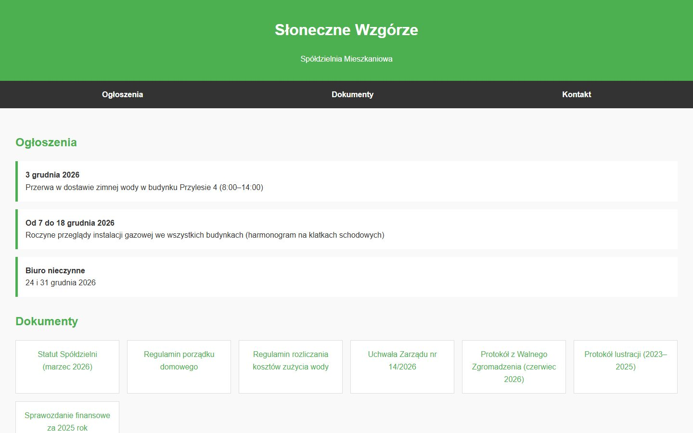
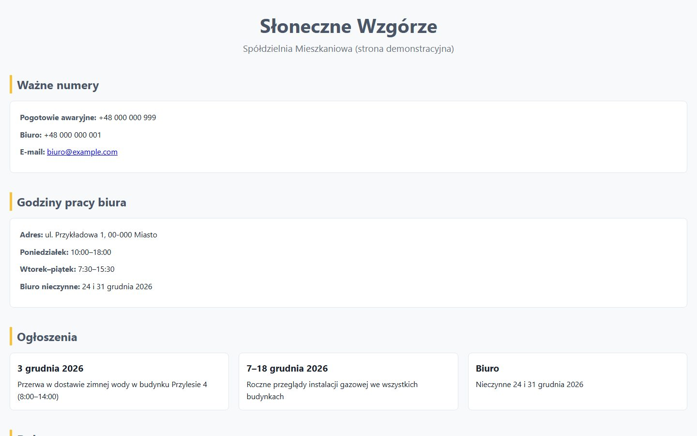
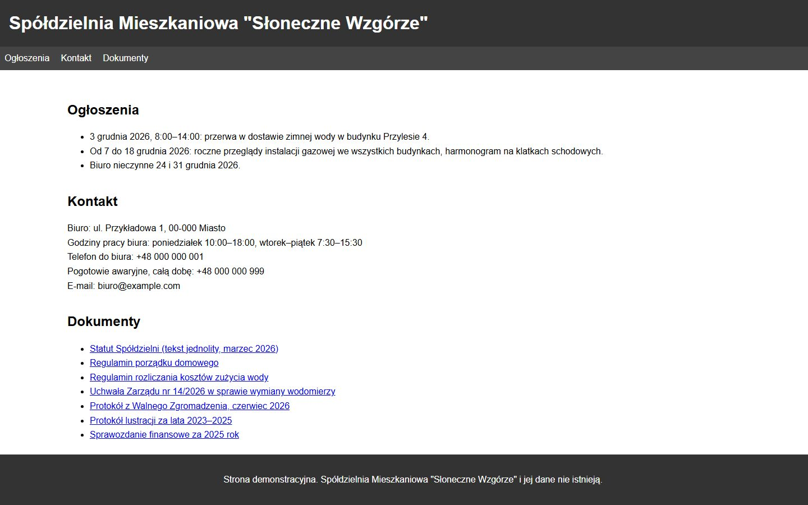
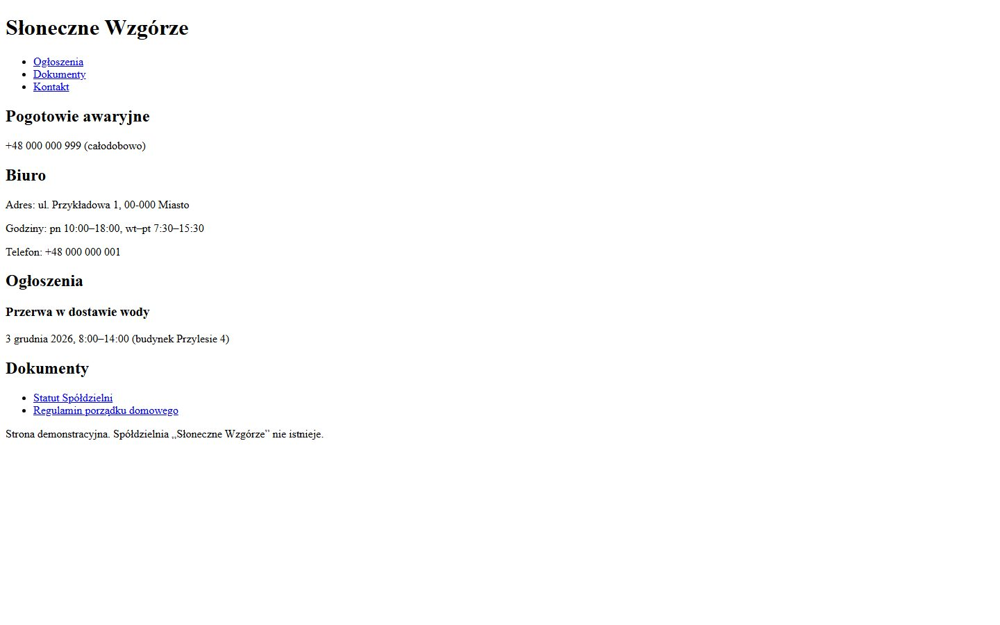

qwen3:14b · No skill
- Time
- 3.2 min
- Tokens
- 3k
- Output
- 2k
- Page
- 5 KB
- JS
- 0 KB
- Detector
- 6 (3 slop)
- axe rules
- 1
Page · Full desktop · Full phone · meta.json
These are test pages, not real websites. Every page here was generated by an AI model from one brief, for a test written up on spoko.space: Do design skills fix AI-built pages? I tested four (Polish version). They are kept as they came out, defects included.
The same brief for the home page of a made-up housing cooperative, built in Claude Code by Sonnet 5.5, Opus 5.5 and Fable 5.2: once without a skill, then once with each of four design skills. One run per combination, so this shows tendencies, not a ranking.
This page is a third series of four local-model runs only: qwen3 and Bielik, without a skill and with frontend-design, repeated from scratch in a separate folder. The first trial · The second
The brief (in Polish) · Method and versions · The repository
Tokens include cache reads, which are most of them. Detector counts the findings of Impeccable's own rule-based checker (npx impeccable detect), so it judges every page by one skill's rules. axe rules counts distinct WCAG 2.2 A/AA rules axe-core flags at 1440 and 390 px.
Chat apps from other vendors, Kimi's desktop agent and models running on the laptop.
Models running on the laptop itself through Ollama: one message, no agent. For a page with a skill the whole SKILL.md went in as the system message, because a bare model cannot open a skill on its own. That is all of frontend-design, but only the instructions of Taste Skill: none of its scripts ran and no photograph was fetched. The answers took one to twelve minutes. One more attempt put qwen3:14b behind Claude Code as a real agent, with Taste Skill installed as a folder: in nine minutes it wrote two plans in its thinking, called no tool and left no page.

Page · Full desktop · Full phone · meta.json

Page · Full desktop · Full phone · meta.json

Page · Full desktop · Full phone · meta.json

Page · Full desktop · Full phone · meta.json